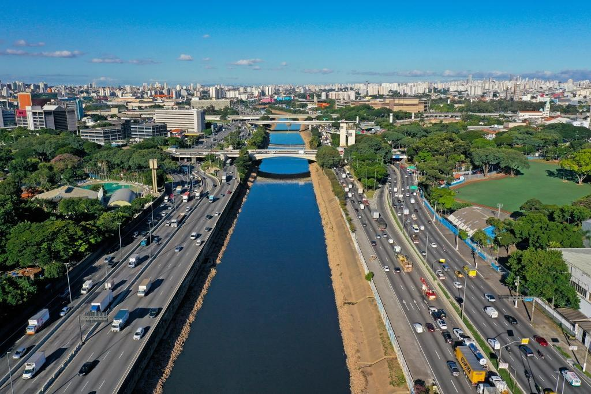

Objetivo do Projeto
O EcoGuard é uma plataforma de inteligência coletiva desenvolvida para monitorar, mapear e proteger **todos os rios e corpos hídricos do estado de São Paulo**. Nosso propósito é dar voz à população para que possa apontar trechos poluídos, descartes irregulares e assoreamentos, gerando um mapa de calor em tempo real que pressione e guie as ações dos órgãos de fiscalização ambiental.
Nossos Valores
Transparência
Garantir que cada denúncia válida seja protocolada e acompanhada publicamente.
Preservação
Atuar diretamente na defesa da biodiversidade e na recuperação dos recursos hídricos paulistas.
Segurança
Proteger integralmente a identidade e o sigilo dos cidadãos denunciantes.
A Necessidade do Aplicativo em SP
Os índices de qualidade da água no estado provam que a fiscalização tradicional precisa do suporte da tecnologia e do engajamento popular para cobrir nossas imensas bacias hidrográficas:
Protocolo e Instruções para Denúncia
Para que sua notificação tenha validade jurídica e técnica para os fiscais ambientais, certifique-se de seguir estes passos antes de abrir o formulário:
Identificação Hídrica
Descubra ou confirme o nome oficial do rio, córrego ou ribeirão afetado. Evite nomes genéricos.
Localização Simples
Informe a cidade e um ponto de referência ou endereço aproximado para que a equipe encontre o local facilmente.
Evidências Reais
Classifique o tipo de dano observado (esgoto, lixo físico, mudas destruídas) para triagem rápida.